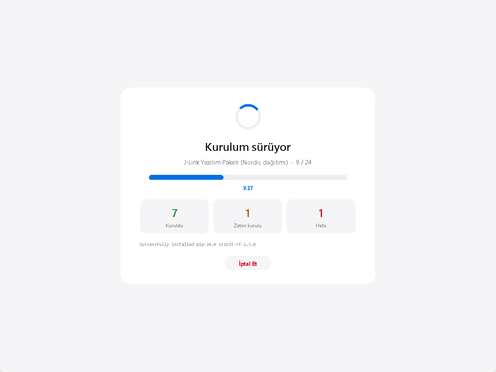

Kategoriler
Her aracın yanında kendi onay kutusu var. Sadece işaretlediklerin kurulur.
🏢 İş Yeri, İletişim & Ofis 35
Chrome, Teams, Slack, Zoom, PDF, uzak erişim, CapCut.
🛡️ Siber Güvenlik & Ağ 50
Nmap, Wireshark, Burp Suite, x64dbg, ImHex, Ghidra.
🛠️ Diller, Git & Sistem 53
Git, Python, WSL, Node.js, Rust, Go, Unity Hub, VirtualBox.
🤖 Yapay Zeka & LLM 39
Ollama, LM Studio, ComfyUI, Netron, CUDA.
📐 Matematik & Bilimsel Hesap 26
MATLAB, Octave, Julia, R, LaTeX, Minitab, Mathematica.
🔌 Elektrik, Elektronik & Otomasyon 30
Altium, TIA Portal, LTspice, EAGLE, MQTT, Keil, Vivado.
🚀 Verimlilik & Sistem 27
PowerToys, Windows Terminal, Everything, Obsidian.
☁️ DevOps, Bulut & Veritabanı 27
Docker, kubectl, Terraform, AWS CLI, HeidiSQL.
🏗️ İnşaat, Harita & Çevre 23
AutoCAD, Revit, Civil 3D, QGIS, ETABS, DWG TrueView.
🔧 Makine, Üretim & CAD 26
SolidWorks, CATIA, ANSYS, Fusion, eDrawings, OpenSCAD.
🐍 Python AI / ML 20
PyTorch, YOLO, ONNX, Optuna, W&B, Streamlit.
🛰️ Uzay, Havacılık & Endüstri 14
OpenRocket, AnyLogic, Simio, FlexSim, MS Project.
🧪 Kimya, Biyo & Tıp 12
Aspen Plus, Avogadro, Fiji, RDKit, QuPath, KNIME.
⚡ Donanım & Gömülü 12
KiCad, Arduino IDE, Wireshark, PuTTY.
🎨 Tasarım & Medya 10
Blender, GIMP, Inkscape, Krita, OBS Studio.
💻 Kodlama & IDE 10
VS Code, Cursor, Android Studio, JetBrains, Neovim.
Hazır profiller
Tek tıkla bir uzmanlık alanının tüm araçlarını seç.
Kurulum sırasında
Hangi programın kurulduğunu, kaç tanesinin bittiğini ve olası hataları canlı gör. İstersen istediğin an iptal et.

3 adımda başla
Kurulum yok, sadece bir .exe dosyası.
İndir
Atolye.exe dosyasını indir.
Başlat
Atolye.exe dosyasına çift tıkla. Python gerekmez.
Seç ve kur
Programları işaretle, Seçilenleri Kur butonuna bas. SolidWorks, AutoCAD, MATLAB gibi ticari yazılımlarda kart, resmî sayfayı açar.